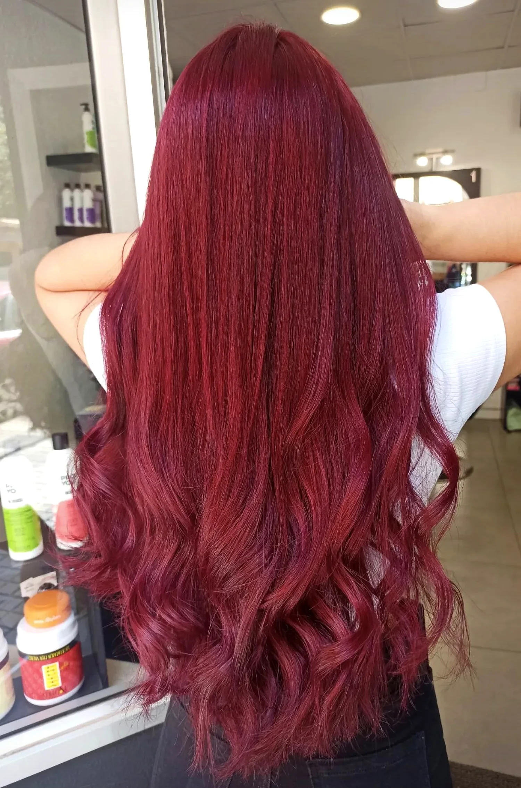
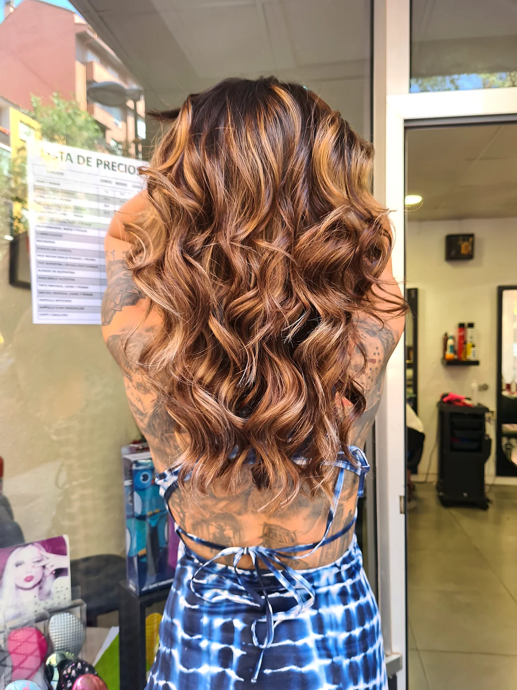
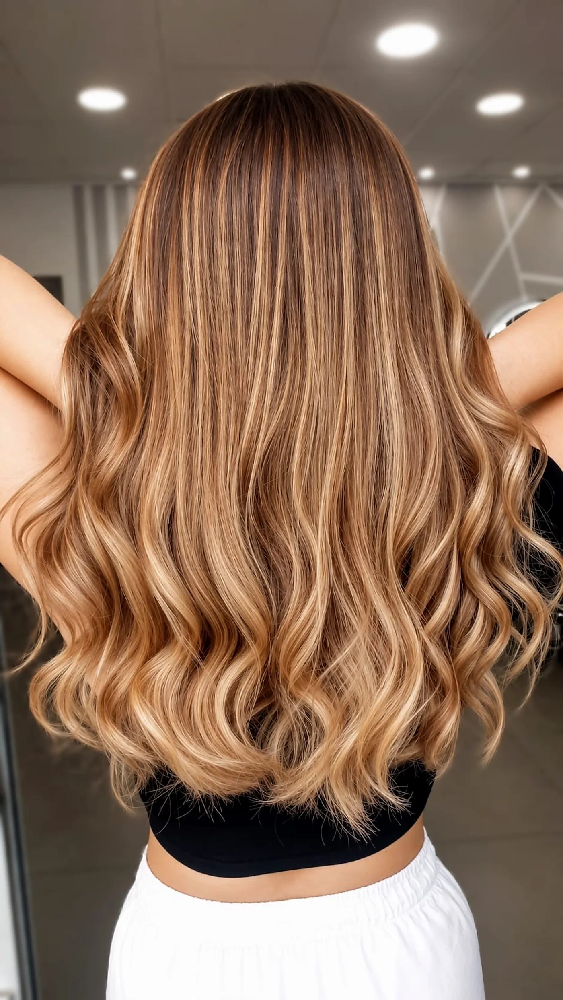
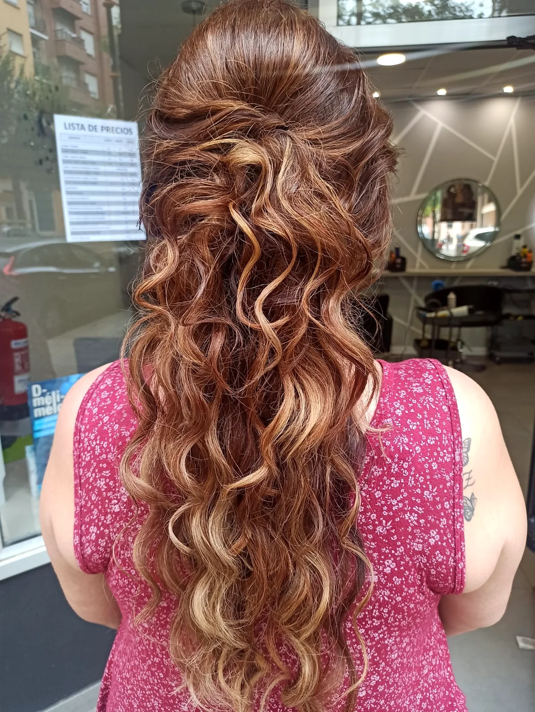
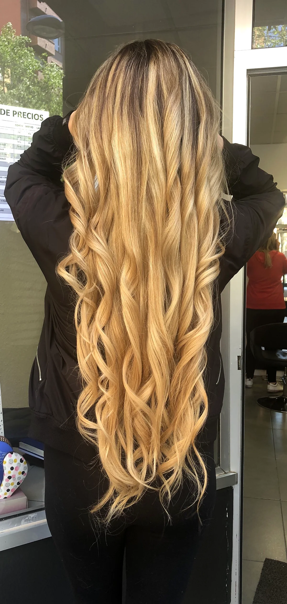
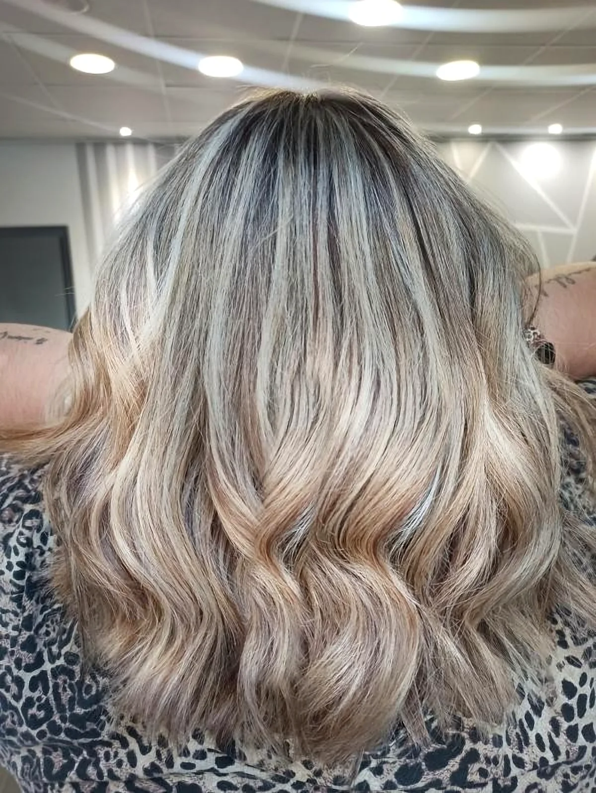

Peluquería y estilismo · Delicias, Zaragoza
El arte de
ser tú.
Corte, color, peinados y tratamientos a medida. Cada servicio hecho a mano y sin prisas, para que te reconozcas en el espejo.
01 — El salón
Un buen look no se elige en una revista. Se elige mirándote: tu cara, tu pelo, tu rutina y cómo lo vas a llevar dentro de dos meses. Por eso cada servicio empieza con una conversación y se hace a mano y sin prisas, para que se vea igual de bonito el día veinte que el primero.
02 — Servicios
Todo lo que tu pelo
necesita.
-
01
Corte & estilo
Cortes pensados para tu tipo de pelo, tus facciones y tu rutina. Que funcione el día de la peluquería y todos los demás.
-
02
Color
Coloración global y tonos fantasía. Colores pensados para tu piel que crecen con elegancia y cubren con naturalidad.
-
03
Mechas & balayage
Del caramelo al rubio frío. Aclarados cuidando la fibra y matices a medida para iluminar sin marcar la raíz.
-
04
Peinados & recogidos
Ondas, trenzas y recogidos para una cena, una graduación o cualquier día que merezca algo especial.
-
05
Tratamientos
Rituales de hidratación, reparación y alisado para devolverle al cabello brillo, fuerza y suavidad.
-
06
Novias & eventos
Peinado de novia, invitadas, comuniones y celebraciones. Con prueba previa para llegar al gran día tranquila.






Trabajo realEsther Val Estilistas
03 — Trabajos reales
Hecho en
nuestro salón.
Sin fotos de catálogo: color, mechas y peinados reales de nuestras clientas. Toca uno para verlo.
Un rojo profundo, uniforme de raíz a puntas, con un brillo que se ve de lejos.
Opiniones reales en Google
4,9/5
★★★★★
Es la nota media que nos dan nuestras clientas en Google.
Esto es lo que cuentan.
★★★★★
“Es la primera vez que me he hecho mechas con Esther y ha sido espectacular! Se va a volver mi peluquería de confianza. Un trato excepcional y ya el resultado solo hace falta verlo, 10 de 10.”
★★★★★
“Llevo yendo a la misma peluquería cerca de 3 años y siempre salgo súper contenta con el resultado. Tanto Esther como Sandra son muy profesionales y atentas. Se nota la vocación y que lo hacen todo con cariño.”
★★★★★
“La mejor peluquera de Zaragoza sin ninguna duda, tiene unas manos que valen oro y siempre acierta con la coloración.”
★★★★★
“He salido encantada. El trato ha sido espectacular y Esther ha sabido captar a la perfección el estilo que quería desde el primer momento. El resultado ha sido increíble. ¡Muy recomendable!”
★★★★★
“Contacté con ellas por recomendación y no he podido acertar más. Te tratan con delicadeza y en todo momento se preocupan por si estás cómoda o necesitas algo.”
★★★★★
“Muy contenta! He ido a teñirme varias veces y encantada! Adoro este rojo-cereza!!!”
04 — La experiencia
Cuatro pasos,
una sola idea: tú.
- I
Escucha
Hablamos de tu pelo, de tu día a día y de lo que te gustaría cambiar (o no).
- II
Diagnóstico
Analizamos textura, densidad y estado del cabello antes de proponer nada.
- III
Ritual
Lavado con masaje, producto profesional y el tiempo que tu servicio necesita.
- IV
Para casa
Te explicamos cómo peinarte y qué usar para que el resultado dure.
05 — Reserva
Tu próxima
versión favorita
empieza aquí.
Elige servicio y día, y te llega directo a nuestro WhatsApp. ¿Prefieres hablar? Llámanos al 645 29 95 50.
06 — Visítanos
Te esperamos
en Delicias.
- Dirección
- C. de Barcelona, 59
Delicias, 50017 Zaragoza - Teléfono
- 645 29 95 50
- Citas
- Con cita previa · llámanos o reserva aquí